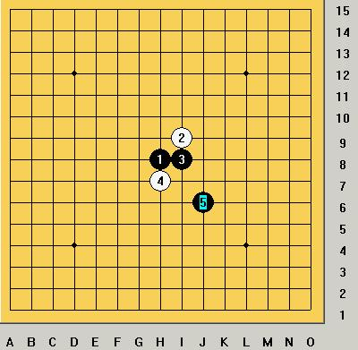
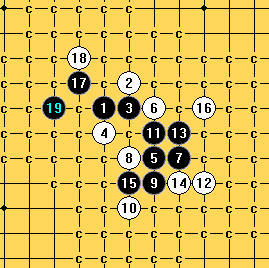
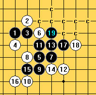

[学术讨论]请高手帮忙防云月的一个5
#1 [学术讨论]请高手帮忙防云月的一个5 作者：笑雨辰 发表时间：2008-10-16 1:56:02

这个5方向没对
有高手帮忙防下不
［此帖子已被 茗弈小刀 在 2009-4-22 20:14:29 编辑过］
#2 Re:请高手帮忙防云月的一个5 作者：江南新绿 发表时间：2008-10-16 2:12:58
http://hi.baidu.com/wzqclass/blog/item/90b233343a8ef23e5bb5f5d7.html
#3 Re:Re:请高手帮忙防云月的一个5 作者：yoda 发表时间：2008-10-16 7:39:23
=======上图对应的爱五子棋谱代码如下，以便你拆解：========
h8i9i8h7j6j8k6i6j5i4j7l5k7k5
======================================================
14怎么胜？
#4 Re:请高手帮忙防云月的一个5 作者：五子痴 发表时间：2008-10-16 10:01:03
正如楼上所说 这个14是唯一的 如果换个14如这个 可以这么杀掉
=======上图对应的爱五子棋谱代码如下，以便你拆解：========
h8i9i8h7j6j8k6i6j5i4j7l5k7i5i7k5i10
======================================================
对于这个14走在K5的位置（下图） 如果是实战 15可以选择下在I10 这个具有很强的欺骗性！几乎你能想得到的点都是败点 只有唯一防 你能找到吗？
=======上图对应的爱五子棋谱代码如下，以便你拆解：========
h8i9i8h7j6j8k6i6j5i4j7l5k7k5i10
======================================================
如果想终结K5的这个14 可以选择15走在E8（犹如天外飞仙）
=======上图对应的爱五子棋谱代码如下，以便你拆解：========
h8i9i8h7j6j8k6i6j5i4j7l5k7k5e8
======================================================我拆这个局面的时候有很多细节没有时间去解决 终结一个变化需要足够大的优势 这个局面也是如此 优势够大了 留给时间充裕得人去打地毯吧！

［ 茗弈小刀 于 2008-10-16 12:41:22 时奖励此帖[金币加 20 威望加1］
#5 Re:请高手帮忙防云月的一个5 作者：江南新绿 发表时间：2008-10-16 11:55:26
14=16,15=14,比较简单,不贴了.#6 Re:Re:请高手帮忙防云月的一个5 作者：yoda 发表时间：2008-10-16 12:42:28
楼上嫌麻烦。

［ 茗弈小刀 于 2008-10-16 15:16:26 时奖励此帖[金币加 20 威望加1］
#7 Re:请高手帮忙防云月的一个5 作者：五子痴 发表时间：2008-10-16 12:58:03
简单杀！被我弄复杂了 过去都是说这个局面杀不掉的 楼上真人才！
#8 Re:请高手帮忙防云月的一个5 作者：冷面孤煞 发表时间：2008-10-16 17:43:27
呵呵，楼上的牛B
#9 Re:请高手帮忙防云月的一个5 作者：nara 发表时间：2008-10-16 18:47:47
yoda,把地毯以附件形式传上来啊.#10 Re:请高手帮忙防云月的一个5 作者：五子痴 发表时间：2008-10-17 10:26:07
根据江南新绿提供的一路杀法 偶把其他点也终结了 应广大棋友要求 织成地毯！忙活了一头午哈
（注：此变化过去学术界一致认为反向云月由于空间边界原因 黑无法胜！看来三手交换五手两打的末路是早晚的事
大家能否呼吁 QQ老板把三手的规则 也改成三口规则 也算与时具进嘛）
 反云月地毯！.rar
反云月地毯！.rar
［ 茗弈小刀 于 2008-10-19 14:59:37 时奖励此帖[金币加 20 威望加1］
#11 Re:请高手帮忙防云月的一个5 作者：只为你而飞 发表时间：2008-11-10 19:47:50
顶楼上的，牛B